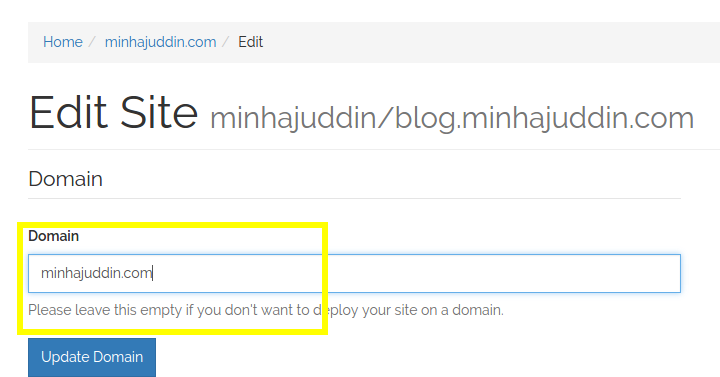
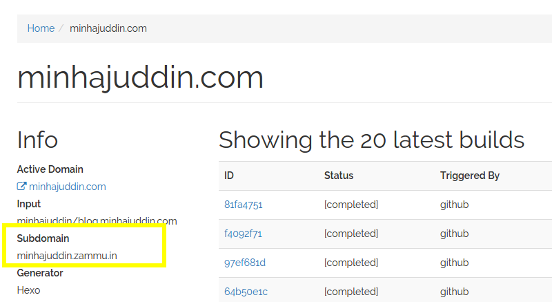

Setup your domain
You can setup your website on your domain using the following 3 simple steps:
-
Create your website and set the domain in zammu to your desired domain, e.g. the blog minhajuddin.com is hosted on zammu, here is a screenshot of the 'edit site' page: 
-
This step varies based on your deployment target:
- GitHub Pages Naked domain (example.com)
Go to your DNS provider's control panel and create two A records pointing to192.30.252.153and192.30.252.154. You can read more about it at https://help.github.com/articles/setting-up-an-apex-domain/ - GitHub Pages or Amazon S3 CNAME (www.example.com)
Go to your DNS provider's control panel and point yourwwwCNAME record to your zammu subdomain, you can check the zammu subdomain in your site details page, the following is a screenshot of my blog's zammu details page, in my instance I could have pointed www.minhajuddin.com to minhajuddin.zammu.in 
- GitHub Pages Naked domain (example.com)
That's it now your website should be up on your domain.